## Warning: package 'ggplot2' was built under R version 3.6.3## Warning: package 'dplyr' was built under R version 3.6.3##
## Attaching package: 'dplyr'## The following object is masked from 'package:gridExtra':
##
## combine## The following object is masked from 'package:atlantistools':
##
## group_data## The following objects are masked from 'package:stats':
##
## filter, lag## The following objects are masked from 'package:base':
##
## intersect, setdiff, setequal, uniond <- system.file("extdata", "setas-model-new-trunk", package = "atlantistools")
Read in output from netcdf files with load_nc and load_nc_physics
The first step with atlantistools is the extraction of data from the atlantis simulation. Data is transformed following the ‘tidy-dataframe’ framework from Hadley Wickham. Output from various variables (individual weight, physics, consumption…) is standardised to a uniform format. To further simplify subsequent analysis the following transformations are applied: - Simulation time is standardised to time in years. - Group names are converted according to the colum ‘LongName’ in the functional groups file. - Data from boundary boxes and islands is removed. - Data from non existent layers is removed. - Values are stored in the column ‘atoutput’.
Extract numbers per species, timestep, polygon, layer and ageclass
nums <- load_nc(nc = file.path(d, "outputSETAS.nc"), fgs = file.path(d, "SETasGroupsDem_NoCep.csv"), bps = c("Filter_Shallow", "Filter_Other", "Filter_Deep", "Benthic_grazer", "Macrobenth_Deep", "Megazoobenthos", "Macrobenth_Shallow", "Macroalgae"), select_groups = c("Planktiv_S_Fish", "Pisciv_S_Fish"), select_variable = "Nums", prm_run = file.path(d, "VMPA_setas_run_fishing_F_Trunk.prm"), bboxes = c(0, 6, 7, 8, 9, 10))
Extract structural nitrogen per species, timestep, polygon, layer and ageclass
structn <- load_nc(nc = file.path(d, "outputSETAS.nc"), fgs = file.path(d, "SETasGroupsDem_NoCep.csv"), bps = c("Filter_Shallow", "Filter_Other", "Filter_Deep", "Benthic_grazer", "Macrobenth_Deep", "Megazoobenthos", "Macrobenth_Shallow", "Macroalgae"), select_groups = c("Planktiv_S_Fish", "Pisciv_S_Fish"), select_variable = "StructN", prm_run = file.path(d, "VMPA_setas_run_fishing_F_Trunk.prm"), bboxes = c(0, 6, 7, 8, 9, 10))
Use build in functions to extract epibenthic groups and boundary boxes
boundary_boxes <- get_boundary(boxinfo = load_box(file.path(d, "VMPA_setas.bgm"))) epibenthic_groups <- load_bps(fgs = file.path(d, "SETasGroupsDem_NoCep.csv"), init = file.path(d, "INIT_VMPA_Jan2015.nc")) resn <- load_nc(nc = file.path(d, "outputSETAS.nc"), fgs = file.path(d, "SETasGroupsDem_NoCep.csv"), bps = epibenthic_groups, select_groups = c("Planktiv_S_Fish", "Pisciv_S_Fish"), select_variable = "ResN", prm_run = file.path(d, "VMPA_setas_run_fishing_F_Trunk.prm"), bboxes = boundary_boxes)
Extract Volume per polygon, layer and timestep.
physics <- load_nc_physics(nc = file.path(d, "outputSETAS.nc"), select_physics = "volume", prm_run = file.path(d, "VMPA_setas_run_fishing_F_Trunk.prm"), bboxes = boundary_boxes, aggregate_layers = FALSE)
All filenames used in the load functions have to be passed as character string giving the connection to the specific files. The easiest way to use atlantistools is to define the Atlantis directory as working directory in your R session. By doing so, you can simply pass the filenames themselfes. like:
structn <- load_nc(nc = "outputSETAS.nc", fgs = "SETasGroupsDem_NoCep.csv", bps = c("Filter_Shallow", "Filter_Other", "Filter_Deep", "Benthic_grazer", "Macrobenth_Deep", "Megazoobenthos", "Macrobenth_Shallow", "Macroalgae"), select_groups = c("Planktiv_S_Fish", "Pisciv_S_Fish"), select_variable = "StructN", prm_run = "VMPA_setas_run_fishing_F_Trunk.prm", bboxes = c(0, 6, 7, 8, 9, 10))
In case you work within a R project all those filenames can be easily auto-completed with the tab key.
In case you are using different folders for generic model files and output files you need to implement the output subfolder into the name of your outputfiles (this is done automatically via auto completion within a R project):
structn <- load_nc(nc = "output\outputSETAS.nc",
fgs = "SETasGroupsDem_NoCep.csv",
bps = c("Filter_Shallow", "Filter_Other", "Filter_Deep", "Benthic_grazer",
"Macrobenth_Deep", "Megazoobenthos", "Macrobenth_Shallow", "Macroalgae"),
select_groups = c("Planktiv_S_Fish", "Pisciv_S_Fish"),
select_variable = "StructN",
prm_run = "VMPA_setas_run_fishing_F_Trunk.prm",
bboxes = c(0, 6, 7, 8, 9, 10))Unfortunately, it is not advised to change the directory within a vignette. Sadly, the demo vignette has to be stored in a different location as the example model files which come shipped with atlantistools making it nearly impossible to demonstrate the proper function calls inside the vignette.
Atlantistools offers a set of functions to calculate model diagnostics.
Use calculate_biomass_spatial to calculate the biomass in tonnes over time for each group and ageclass per polygon and layer.
bboxes <- get_boundary(boxinfo = load_box(file.path(d, "VMPA_setas.bgm"))) nc_gen <- file.path(d, "outputSETAS.nc") nc_prod <- file.path(d, "outputSETASPROD.nc") prm_run <- file.path(d, "VMPA_setas_run_fishing_F_Trunk.prm") prm_biol <- file.path(d, "VMPA_setas_biol_fishing_Trunk.prm") fgs <- file.path(d, "SETasGroupsDem_NoCep.csv") bps <- load_bps(fgs = fgs, init = file.path(d, "INIT_VMPA_Jan2015.nc")) bio_conv <- get_conv_mgnbiot(prm_biol = prm_biol) groups_age <- c("Planktiv_S_Fish", "Pisciv_S_Fish") groups_rest <- c("Cephalopod", "Megazoobenthos", "Diatom", "Lab_Det", "Ref_Det") nums <- load_nc(nc = nc_gen, bps = bps, fgs = fgs, select_groups = groups_age, select_variable = "Nums", prm_run = prm_run, bboxes = bboxes) sn <- load_nc(nc = nc_gen, bps = bps, fgs = fgs, select_groups = groups_age, select_variable = "StructN", prm_run = prm_run, bboxes = bboxes) rn <- load_nc(nc = nc_gen, bps = bps, fgs = fgs, select_groups = groups_age, select_variable = "ResN", prm_run = prm_run, bboxes = bboxes) n <- load_nc(nc = nc_gen, bps = bps, fgs = fgs, select_groups = groups_rest, select_variable = "N", prm_run = prm_run, bboxes = bboxes) vol <- load_nc_physics(nc = nc_gen, select_physics = c("volume", "dz"), prm_run = prm_run, bboxes = bboxes, aggregate_layers = F) df_bio_spatial <- calculate_biomass_spatial(nums = nums, sn = sn, rn = rn, n = n, vol_dz = vol, bio_conv = bio_conv, bps = bps)
Use calculate_consumed_biomass to calculate the consumed biomass of each prey species in tonnes by each predator and ageclass per timestep and polygon.
bboxes <- get_boundary(boxinfo = load_box(file.path(d, "VMPA_setas.bgm"))) nc_gen <- file.path(d, "outputSETAS.nc") nc_prod <- file.path(d, "outputSETASPROD.nc") prm_run <- file.path(d, "VMPA_setas_run_fishing_F_Trunk.prm") prm_biol <- file.path(d, "VMPA_setas_biol_fishing_Trunk.prm") fgs <- file.path(d, "SETasGroupsDem_NoCep.csv") bps <- load_bps(fgs = fgs, init = file.path(d, "INIT_VMPA_Jan2015.nc")) bio_conv <- get_conv_mgnbiot(prm_biol = prm_biol) groups_age <- c("Planktiv_S_Fish", "Pisciv_S_Fish") groups_rest <- c("Cephalopod", "Megazoobenthos", "Diatom", "Lab_Det", "Ref_Det") df_eat <- load_nc(nc = nc_prod, bps = bps, fgs = fgs, select_groups = groups_age, select_variable = "Eat", prm_run = prm_run, bboxes = bboxes) df_grz <- load_nc(nc = nc_prod, bps = bps, fgs = fgs, select_groups = groups_rest, select_variable = "Grazing", prm_run = prm_run, bboxes = bboxes) df_dm <- load_dietcheck(dietcheck = file.path(d, "outputSETASDietCheck.txt"), fgs = fgs, prm_run = prm_run, version_flag = 2, convert_names = TRUE) vol <- load_nc_physics(nc = nc_gen, select_physics = "volume", prm_run = prm_run, bboxes = bboxes, aggregate_layers = F) df_cons <- calculate_consumed_biomass(eat = df_eat, grazing = df_grz, dm = df_dm, vol = vol, bio_conv = bio_conv)
## 50% matching timesteps between PROD.nc and DietCheck.txt## 11.61% data is lost due to missing diet data despite available eat data.## 21.97% data is lost due to missing eat data despite available diet data.atlantistools offers a wide variety of plotting functions to visualise Atlantis simulations
The two major plotting functions are plot_line to visualise time-series and plot_bar. Each plot in atlantistools either returns a ggplot2 object or a table-grob composed of individual ggplot2 objects. Therefore, you are able to customise the plots to your personal liking afterwards.
plot_line can be used in various ways
# Aggregate spatial biomass! biomass <- df_bio_spatial %>% agg_data(groups = c("species", "time"), fun = sum) plot_line(biomass, ncol = 3)
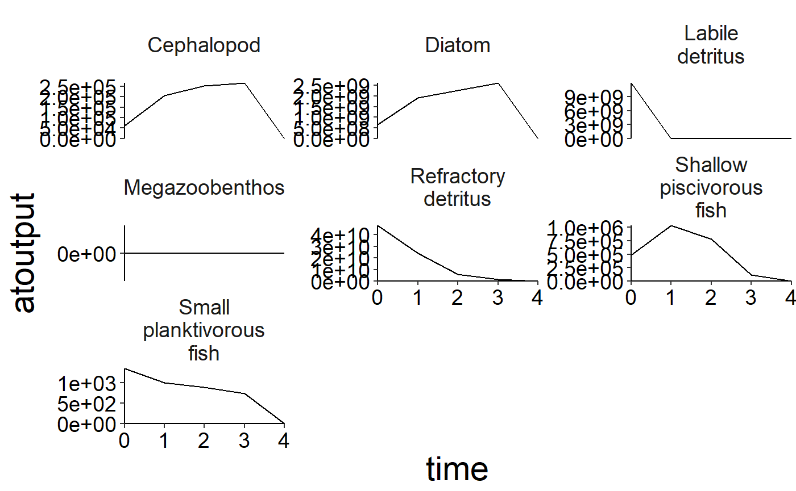
plot_line(biomass, col = "species", ncol = 3)
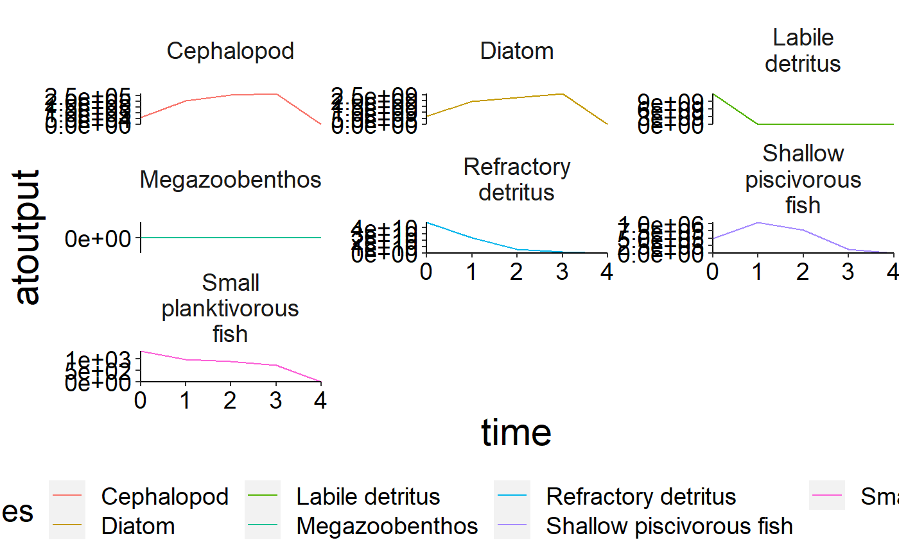
# Aggregate spatial biomass for fully age structured groups! biomass_age <- df_bio_spatial %>% filter(agecl > 2) %>% agg_data(groups = c("species", "agecl", "time"), fun = sum) plot_line(biomass_age, col = "agecl")
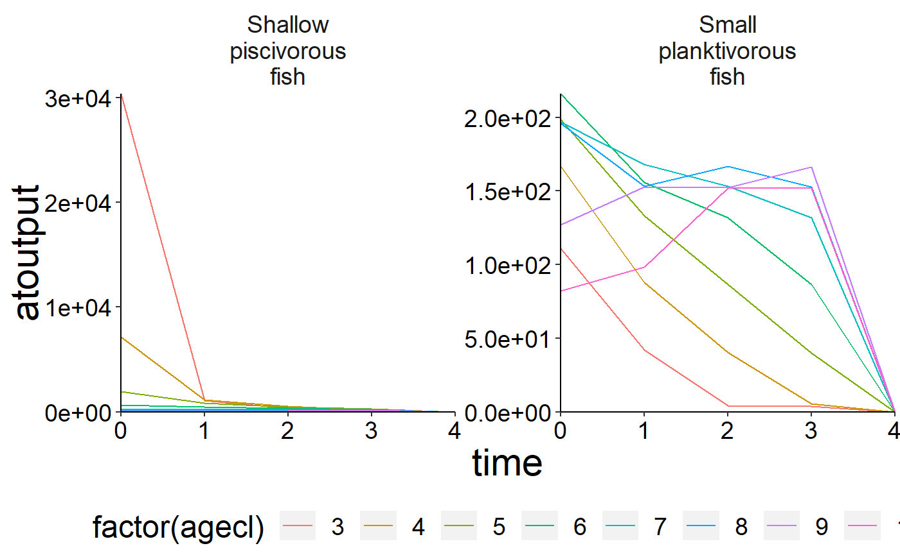
plot_line(biomass_age, wrap = "agecl", col = "species", ncol = 3)
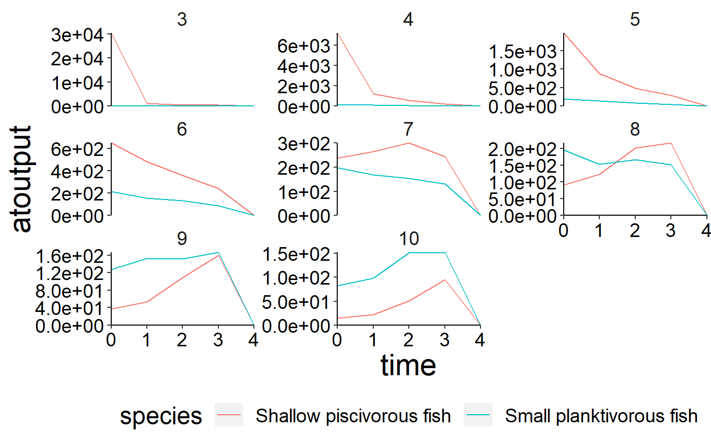
Compare model outoput with observed data.
ex_data <- read.csv(file.path(system.file("extdata", "setas-model-new-becdev", package = "atlantistools"), "setas-bench.csv"), stringsAsFactors = FALSE) names(ex_data)[names(ex_data) == "biomass"] <- "atoutput" data <- biomass data$model <- "atlantis" comp <- rbind(ex_data, data, stringsAsFactors = FALSE) # Show atlantis as first factor! comp$model <- factor(comp$model, levels = c("atlantis", sort(unique(comp$model))[sort(unique(comp$model)) != "atlantis"])) # Create plot plot_line(comp, col = "model", ncol = 3)

# Use convert_relative_initial and {plot_add_box with plot_line. # Firstly, use convert_relative_initial to generate a relative time series first. # Aggregate the polygon and layer based data first. structn_age <- agg_data(data = structn, groups = c("species", "time", "agecl"), fun = mean) df <- convert_relative_initial(structn_age) # Create the base plot with plot_line. plot <- plot_line(df, col = "agecl") # Add lower and upper range. plot_add_box(plot)
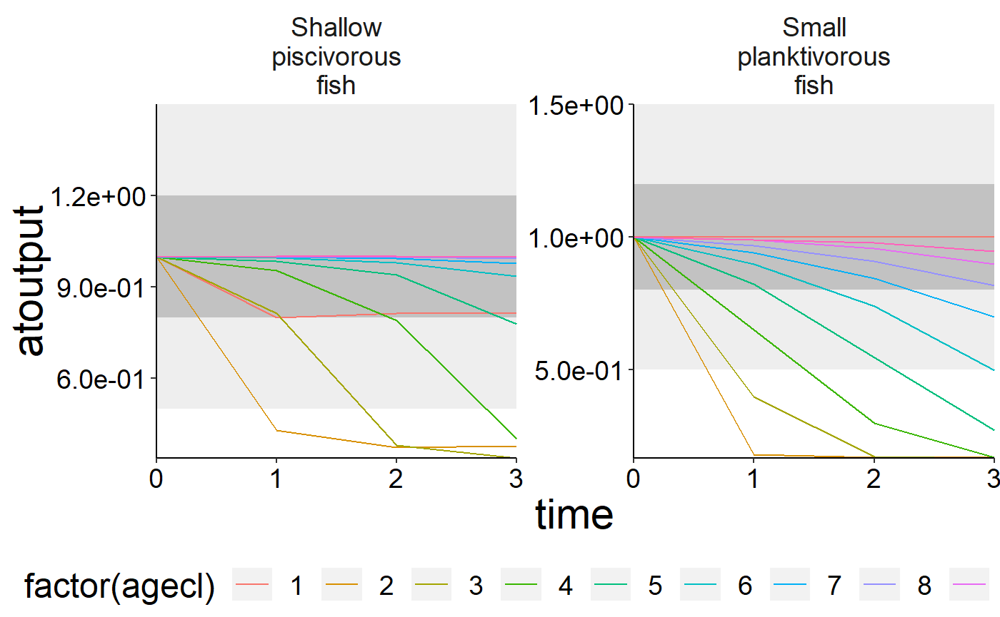
# You can set the upper and lower range of the box as you like! plot_add_box(plot, range = c(0.8, 0.4))
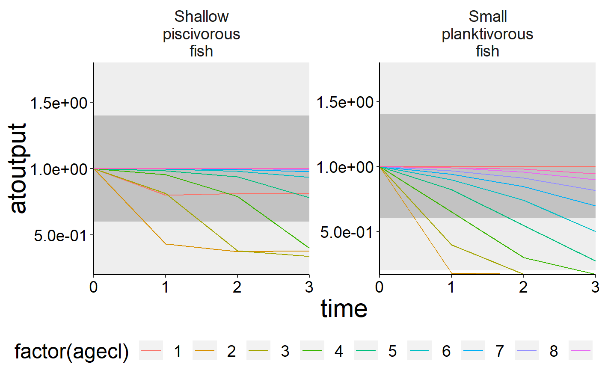
# Create spatial timeseries plots in conjuction with custom_grid to plot physics data. plot <- plot_line(ref_physics, wrap = NULL) custom_grid(plot, grid_x = "polygon", grid_y = "variable")
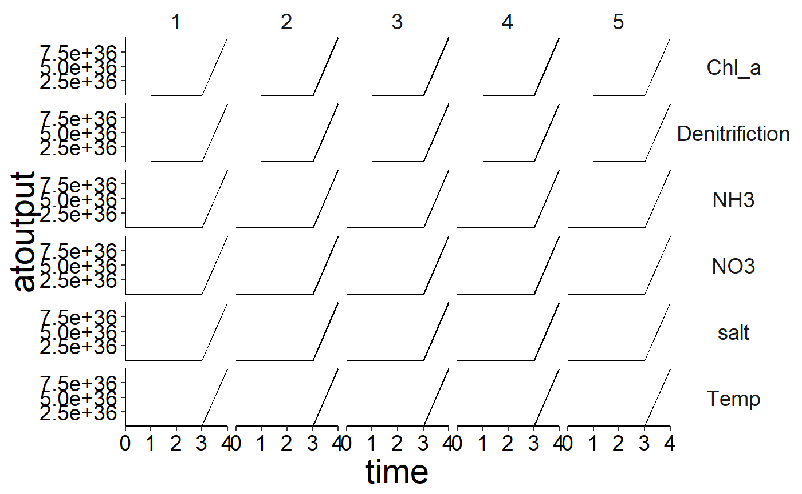
flux <- load_nc_physics(nc = nc_gen, select_physics = c("eflux", "vflux"), prm_run = prm_run, bboxes = bboxes, aggregate_layers = FALSE) plot <- plot_line(flux, wrap = NULL, col = "variable") custom_grid(plot, grid_x = "polygon", grid_y = "layer")
## Warning: Removed 12 row(s) containing missing values (geom_path).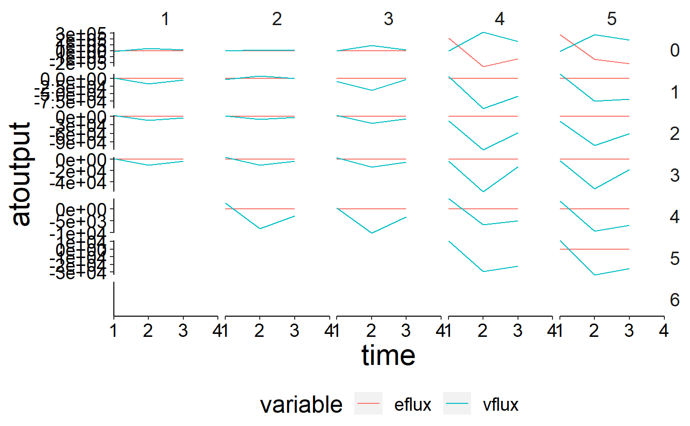
Create a map of your model for Bec!
Always add a spatial representation of your model if you have issues with model tuning. This makes the life of Bec and Beth much easier.
bgm_data <- convert_bgm(file.path(d, "VMPA_setas.bgm")) plot_boxes(bgm_data)
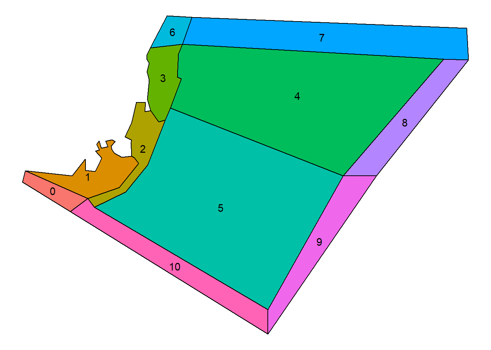
# Aggregate numbers. nums_age <- agg_data(data = nums, groups = c("species", "agecl", "time"), fun = sum) # Use agg_perc together with plot_bar to visualise the relative cohort structure over time. df <- agg_perc(nums_age, groups = c("time", "species")) plot_bar(df, fill = "agecl", wrap = "species")
## Warning: Removed 20 rows containing missing values (position_stack).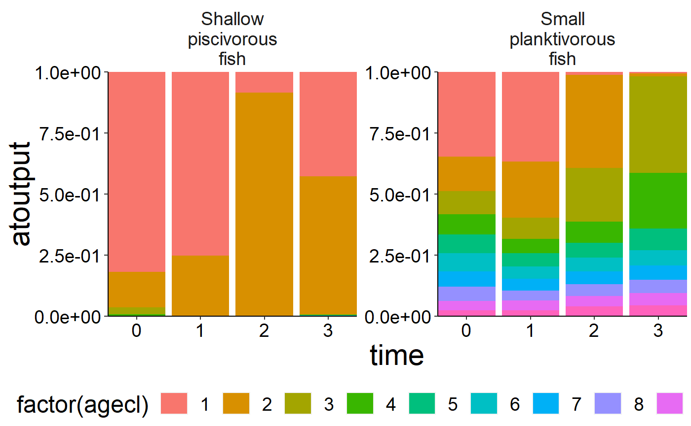
df <- agg_perc(biomass_age, groups = c("time", "species")) plot_bar(df, fill = "agecl", wrap = "species")
## Warning: Removed 16 rows containing missing values (position_stack).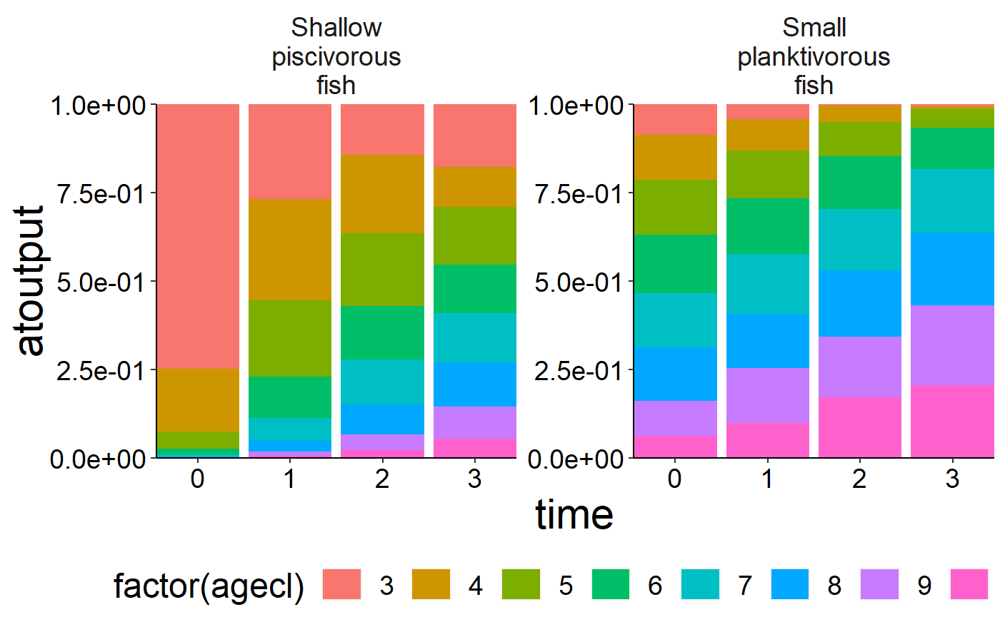
Plot feeding interactions
Please note the plots will look much nicer if the simulation period is elongated. I only ran the SETAS model provided with atlantistools for 3 years to minimise the size of the package.
Data about feeding interactions can be visualised with plot_diet (Please use plot_diet_bec_dev for bec-dev models. However, in contrast to trunk models the plots will only give an indication about feeding interacions. They do not show the actual consumed biomass). The data originates from DietCheck.txt.
The plots are stored as a list of table-grob. You can plot them on the graphics device with gridExtra::grid.arrange.
feeding_plots <- plot_diet(df_cons, wrap_col = "agecl")
## Joining, by = c("time", "pred", "agecl", "prey")
## Joining, by = c("time", "pred", "agecl", "prey")gridExtra::grid.arrange(feeding_plots[[1]])
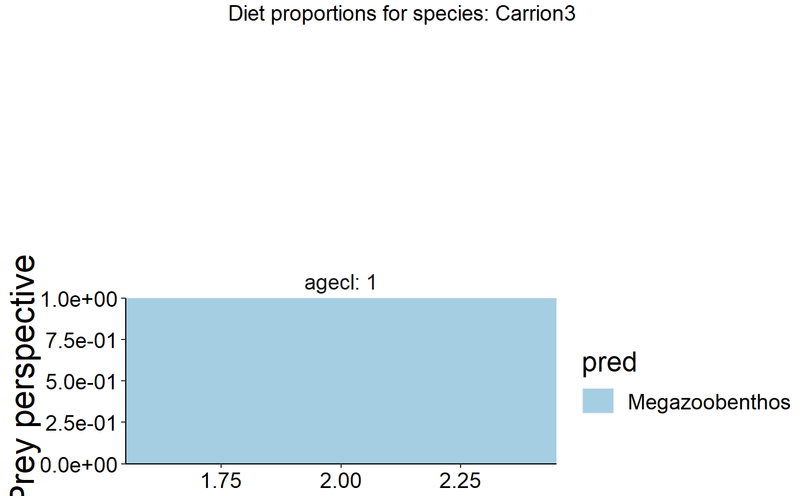
gridExtra::grid.arrange(feeding_plots[[7]])
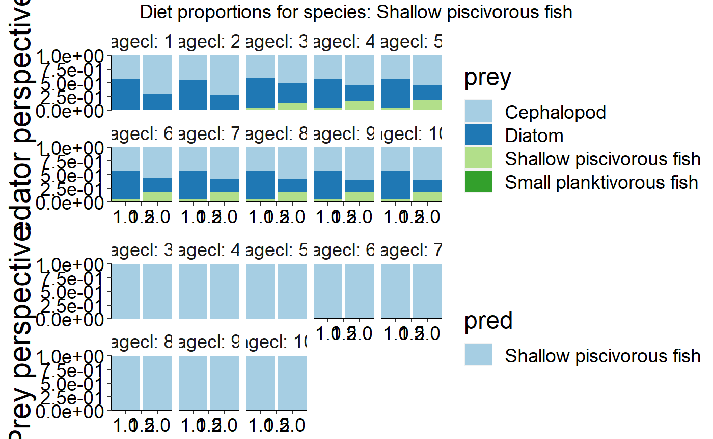
# Apply names() to the list of table-grobs to extract the predator name names(feeding_plots)
## [1] "Carrion3" "Cephalopod"
## [3] "Diatom" "Labile detritus"
## [5] "Megazoobenthos" "Refractory detritus"
## [7] "Shallow piscivorous fish" "Small planktivorous fish"# Save all plots to disc in multiple pdfs! for (i in seq_along(feeding_plots)) { pdf(file.path(d, paste0("feeding", i, ".pdf")), width = 14, height = 10) grid.arrange(feeding_plots[[i]]) dev.off() } # Save all plots to disc in one pdf! pdf(file.path(d, "feeding.pdf"), width = 14, height = 10) marrangeGrob(feeding_plots, nrow = 1, ncol = 1) dev.off()
Change parameter values!
Let’s say you want to change a parameter in your biological parameter file. For example the recruit weights for a specific fish. In our case Small planktivorous fish (Code = FPS). You can either change the existing valu by multiplication with a factor or set a new absolut value. In our case we increase the existing value by a factor of 2.
new_prm <- change_prm(prm_biol = file.path(d, "VMPA_setas_biol_fishing_Trunk.prm"), select_acronyms = "FPS", roc = 2, parameter = "KWRR", save_to_disc = FALSE)
You can use extract_prm to check the format of the resulting *.prm. However, I checked the function thoroughly so you would normally set save_to_disc to TRUE to overwrite your existing parameter file with the newly generated one Please make sure to backup your original files beforehand.
extract_prm(prm_biol = file.path(d, "VMPA_setas_biol_fishing_Trunk.prm"), variables = "KWRR_FPS")
## [1] 0.075extract_prm(prm_biol = file.path(d, "VMPA_setas_biol_fishing_Trunk.prm"), variables = "KWSR_FPS")
## [1] 0.028You can also pass a vector of groups to change the parameter for multiple functional groups with a single call to change_prm.
new_prm <- change_prm(prm_biol = file.path(d, "VMPA_setas_biol_fishing_Trunk.prm"), select_acronyms = c("FPL", "FPO", "FPS", "FVD", "FVV", "FVS", "FVB", "FVT", "FVO"), roc = runif(n = 9, min = 2, max = 5), parameter = "KWRR", save_to_disc = FALSE)
This helps to automate the tuning and calibration of your model. In addition it is a useful tool to make the tuning reproduceable and transparent for other modelers.
In case you want to change the parameter values for cohort structured groups with multiple values per parameter (E.g. Clearance rate and mum for fish groups) please use change_prm_cohrt. Please note that the function only works with parameters whose values are stored in the next row following the flag in the *.prm file.
new_prm <- change_prm_cohort(prm_biol = file.path(d, "VMPA_setas_biol_fishing_Trunk.prm"), select_acronyms = c("FPL", "FPO"), roc = matrix(rep(2, times = 20), nrow = 2, ncol = 10), parameter = "C", save_to_disc = FALSE)